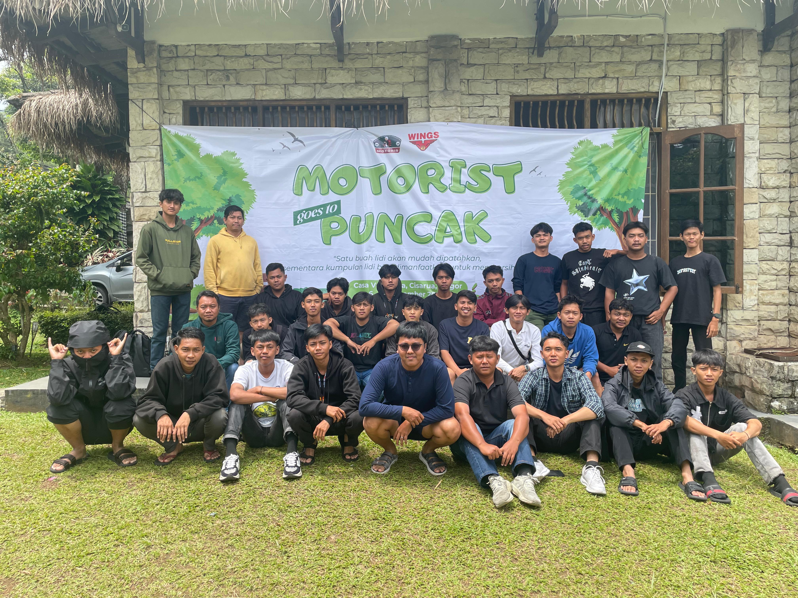
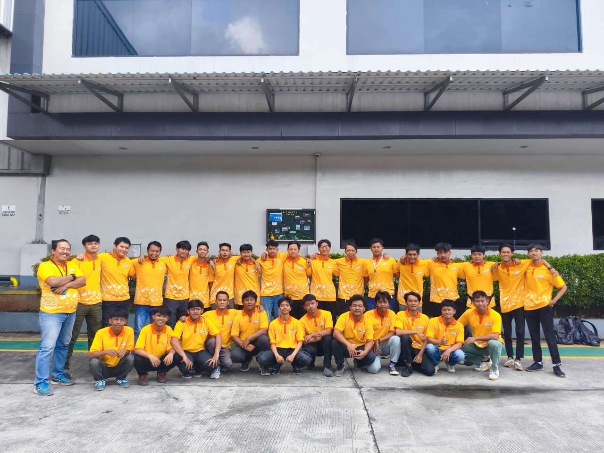
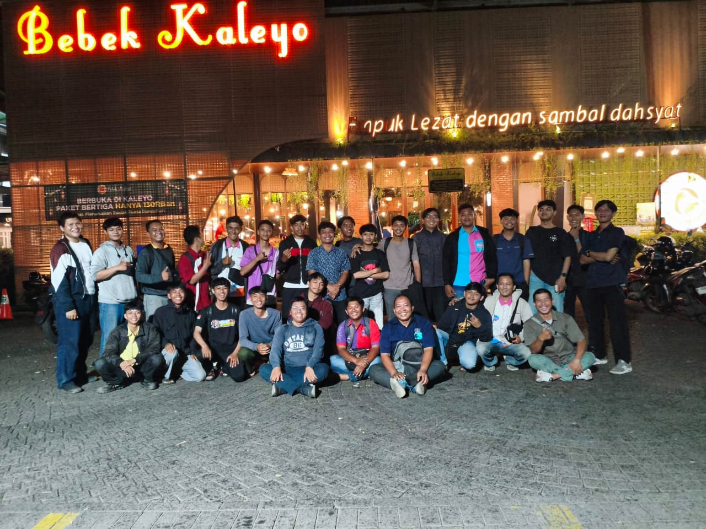
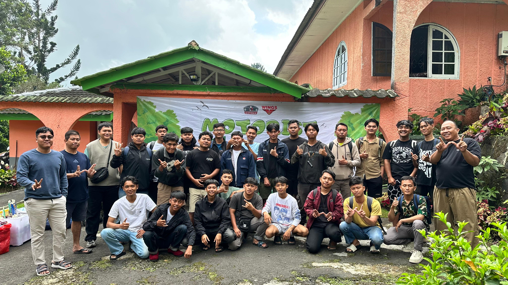
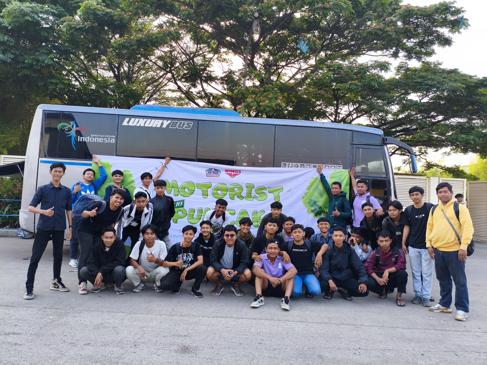
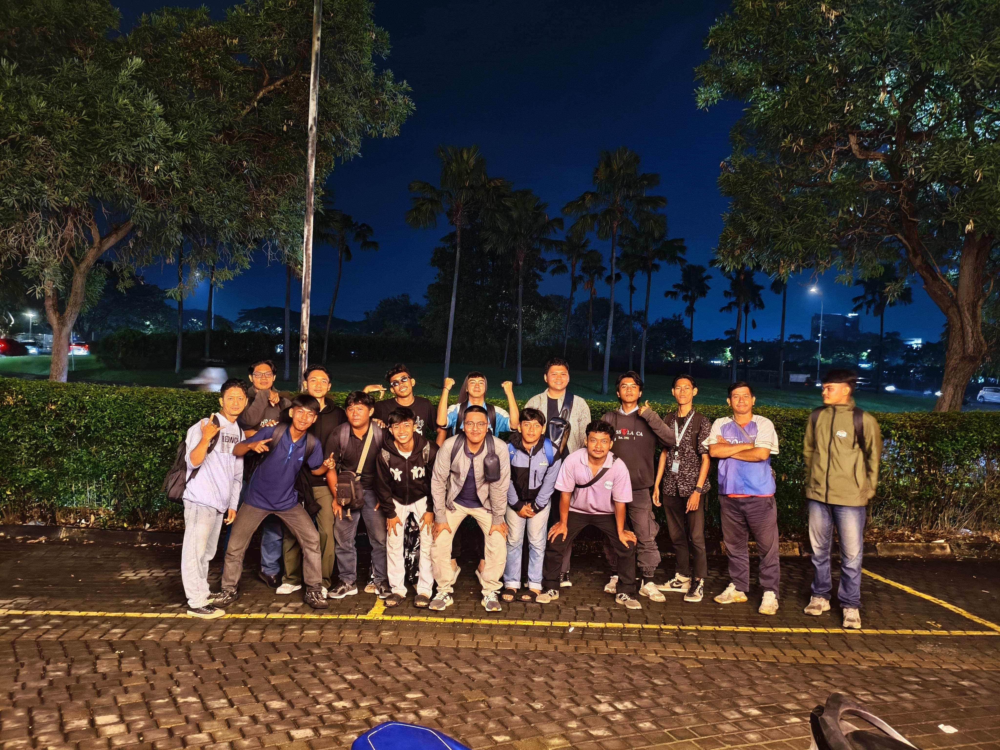
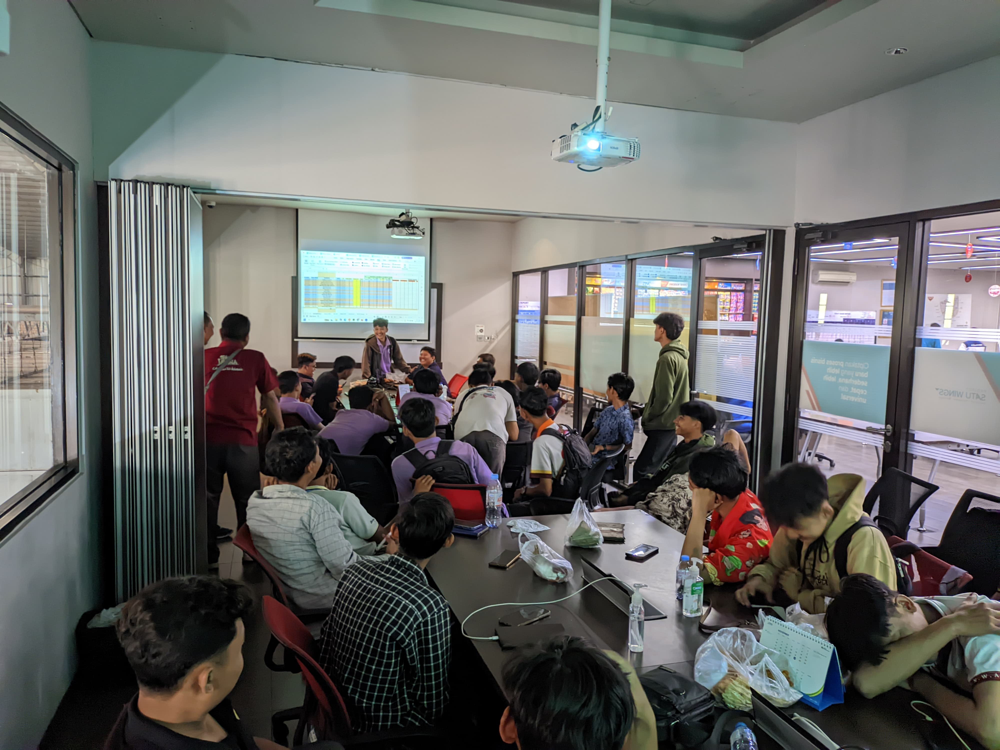
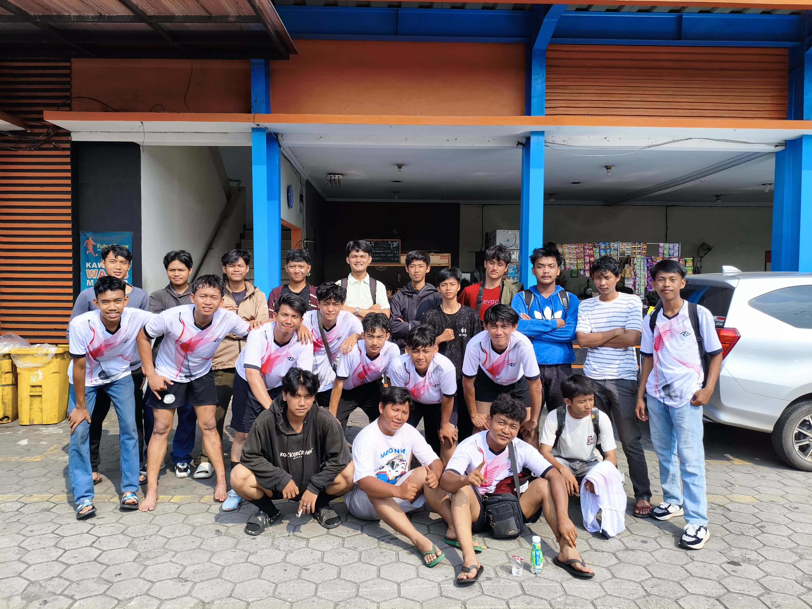
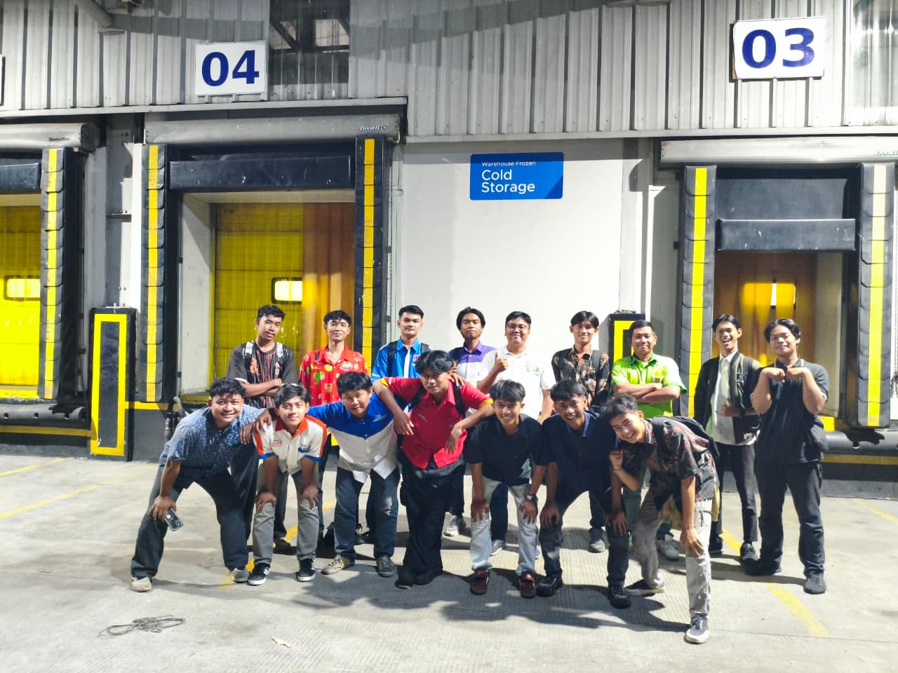

[ ACCESSING LOGS ]
Inisialisasi sistem perpisahan Faishal.
Authorized Personnel Only
[ SYSTEM INITIALIZING ]
Selamat Pagi✊, rekan-rekan hebat! Sepertinya masa aktif Faishal di PT Marunda Distribusindo Raya ini sudah mencapai batas limitnya.
Faishal sengaja bikin halaman ini sebagai bentuk effort terakhir buat Teman-teman. Karena buat Faishal, perpisahan lewat chat biasa itu terlalu singkat buat semua momen yang udah kita lewati bareng.
[ CORE MEMORIES ]
Faishal inget banget awal masuk sini, masih bingung sistem dan cara kerja di sini, tapi kalian dengan sabar ngebantu dan mengajari Faishal sampai akhirnya kita bisa solid banget kayak sekarang.
Terima kasih buat setiap brainstorming yang panas tapi asik, nongkorng depan pt ngobrol,bercanda,makan mendoan,dan saling kasih saran dan kritik, dan buat kekompakan tim yang selalu bisa nyelesein masalah serumit apa pun. Kalian adalah aset terbaik yang pernah Faishal temui.
[ HUMAN ERROR ]
Selama kita kerja bareng, Faishal sadar pasti ada "Kesalahan" dalam sikap atau kata-kata Faishal yang mungkin kurang berkenan. Maafin Faishal ya kalau pernah bikin emosi, repot atau ada salah yang disengaja maupun nggak.
Faishal pergi membawa banyak pelajaran berharga dari kalian. Kerja keras dan Pengalamman kalian selalu jadi inspirasi buat Faishal ke depannya. Communication is Key, jadi jangan sampe kita beneran putus kontak ya!
[ VISUAL LOGS ]
Sedikit dokumentasi dari sekian banyak momen kebersamaan kita. Memories cached successfully.










[ CONNECTION ENDED ]
Hari ini Faishal resmi disconnect dari tugas harian, tapi Faishal harap persahabatan kita tetep sinkron di luar sana.
Sukses terus buat Teman-teman Sales Dan KSR Faishal, jangan lupa istirahat, dan sampai ketemu di level selanjutnya! Cheers to the best team ever! 🍻